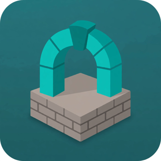

A website that can't answer questions is the old model.
Cornerstone Web Studio builds simple websites for small businesses. Each site can answer customer questions day and night, from the owner's own answers. The assistant on this page is a working example — try it.
See the packages Try the sample chatHow it works
- We build a sample homepage first, free. You see your site before you pay.
- You approve it and pay a 50% deposit. Each site includes two revision rounds.
- Your site goes live in 10 business days. You pay the other 50% on launch. You own the site and the domain. There is no contract.
Packages
One-Page Site
One page with your services, your area, and a tap-to-call button. Cornerstone Chat is a $99 add-on.
Standard Site
A full site with room for your services, your story, and your contact page. Cornerstone Chat included.
CMS Site
A full site you can update yourself — change the words and pictures when you want. Cornerstone Chat included.
Care Plan
We make your updates for you: site changes and chat answer updates. Send the change, we do the work.
Local SEO Setup
Your Google Business Profile set up and filled out, listings on Bing Places, Apple Maps, and Yelp, and a review-request link to share. We never promise a search rank.
Every site we build is SEO-ready at no extra charge: correct page titles and descriptions, image alt text, a sitemap, and your town and service words in the copy.
Your website should answer the phone, too.
Most business websites are brochures. They look fine, and they say nothing back. When a customer asks a question at 9 pm, a brochure gives them silence — and they call the next name on the list.
Every Cornerstone Web Studio site can include Cornerstone Chat: an assistant trained on your own answers. You fill out one short form — your hours, your services, your prices, your area. The assistant answers from that form, word for word on prices and guarantees. It never guesses. A question outside the form goes straight to your email with the customer's name and contact, so the lead is yours, not lost.
- One-Page site: Cornerstone Chat available as a $99 add-on
- Standard and CMS sites: Cornerstone Chat included
- Care Plan: answer updates included — send new answers any time
The 10-Point Website Checkup
A free self-test for small business owners. Run it on your phone in about ten minutes: ten checks that show whether your website is sending customers to you — or to the next shop on the list.
Download the free checkup (PDF)Start with a free sample
Email hello@getcornerstoneweb.com or call (608) 352-0644. Tell us your business name and what you do. We build your sample homepage first — you pay nothing until you approve it.